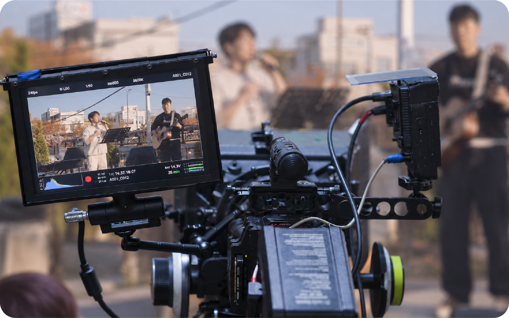
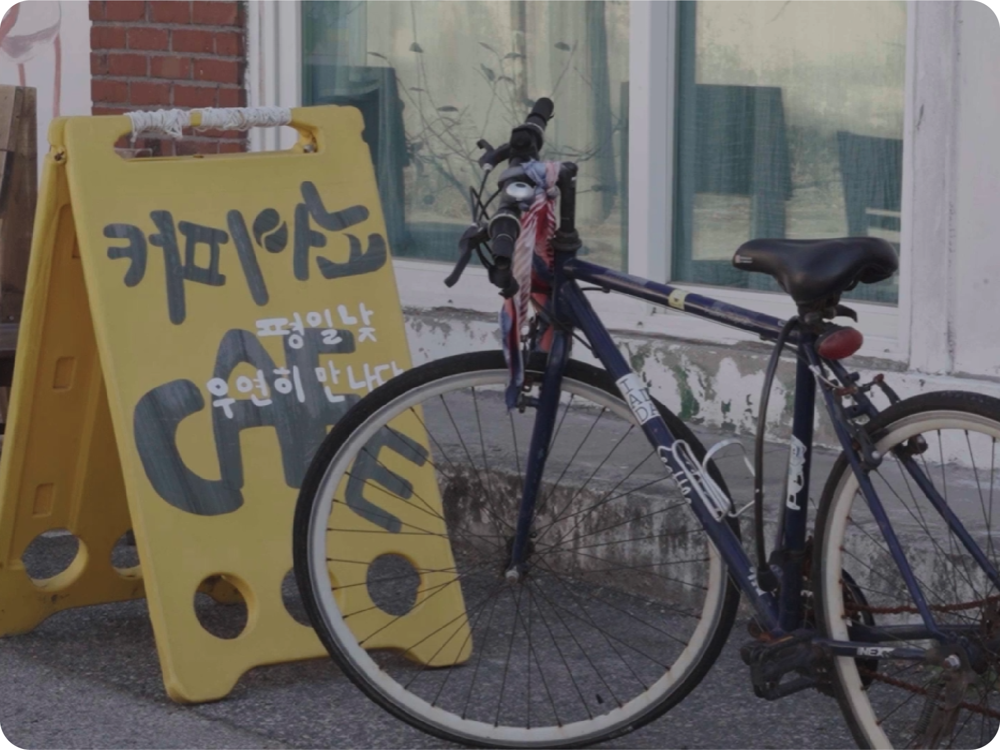
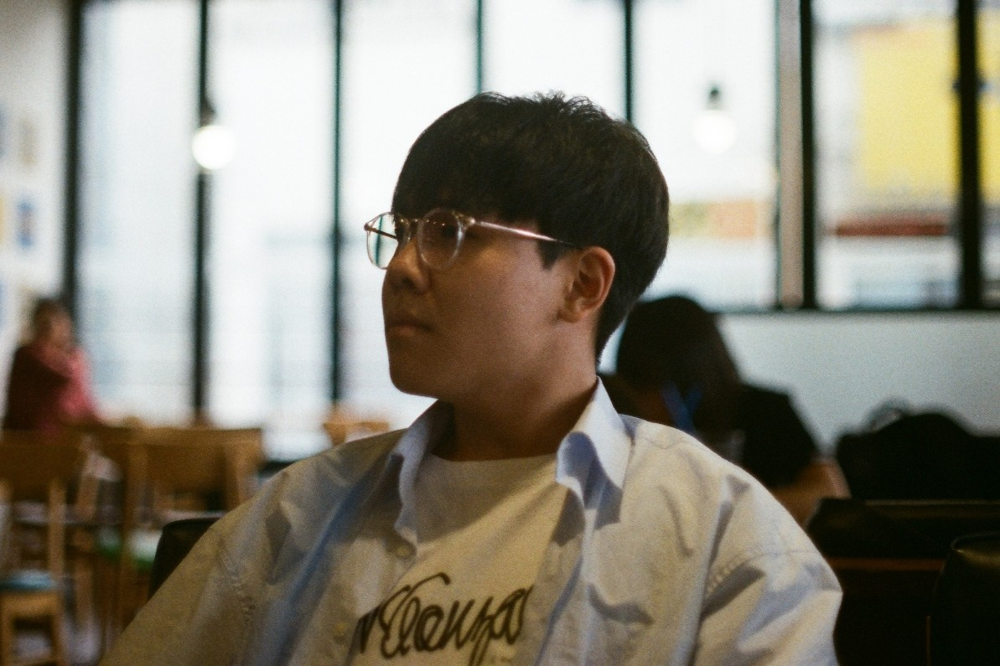

단순한 영상 제작을 넘어,
브랜드와 메시지에 맞는 기획부터 촬영, 편집까지
전 과정을 함께합니다.
당신의 이야기가 더 잘 보일 수 있도록,
픽셀아크가 고민하고, 완성합니다.


픽셀아크는 단순히 예쁜 영상을 만드는 것이 아니라,
보는 사람의 시선과 감정을 움직이는 영상을 만듭니다.
처음 만나는 순간부터, 마지막 편집본이 완성되기까지
기획자이자 크리에이터로서, 하나의 프로젝트에 진심을 다합니다.
우리는 단순히 영상을 만드는 것이 아닌,
브랜드의 가치를 담은 결과물을 만듭니다.
픽셀아크는 다음의 가치를 가장 중요하게 생각합니다.
단순한 기록이 아닌, 브랜드의 목표와 메세지를 고려한 전략적인 기획을 합니다.
다양한 환경과 상황에 유연하게 대응하며 최적의 순간을 포착합니다.
스토리를 강화하는 편집으로 시청자의 집중과 공감을 이끌어냅니다.
기획 단계부터 결과 전달까지 지속적인 소통으로 더 나은 결과를 만듭니다.
영상 디자인을 전공하며 다양한 프로젝트를 경험했고,
지금은 픽셀아크를 통해 더 많은 사람들의 이야기를
영상으로 전하고 있습니다.
